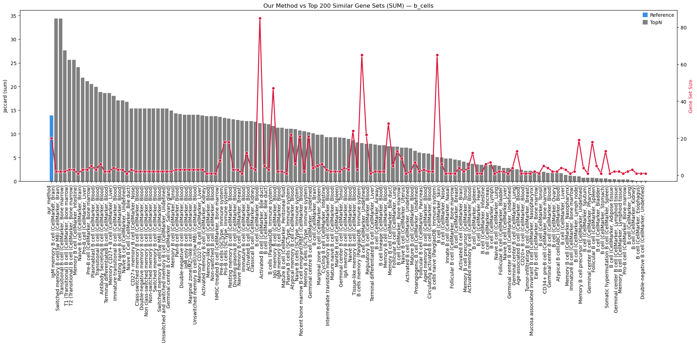
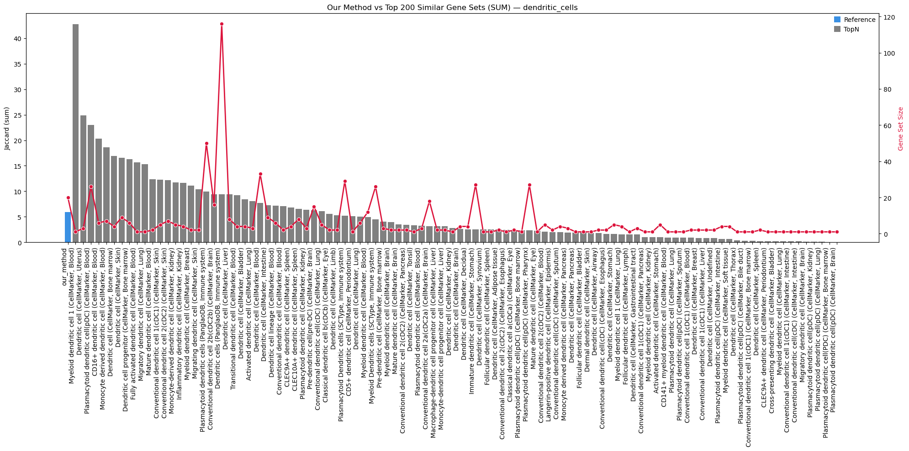
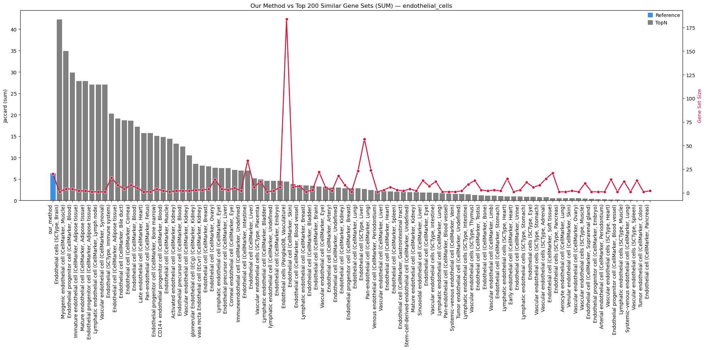
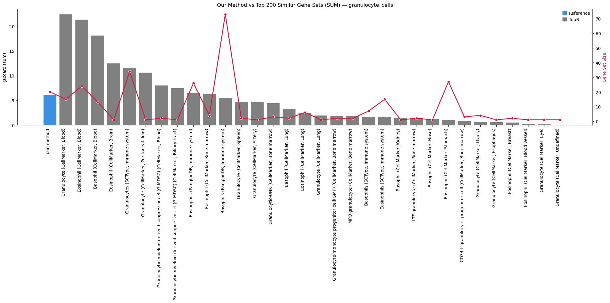
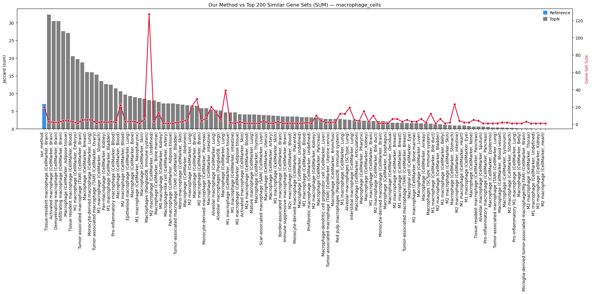
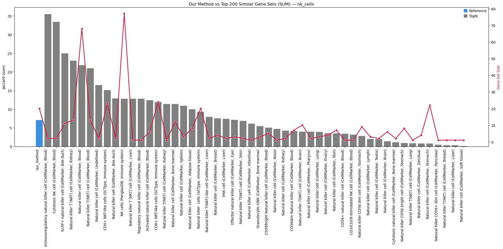
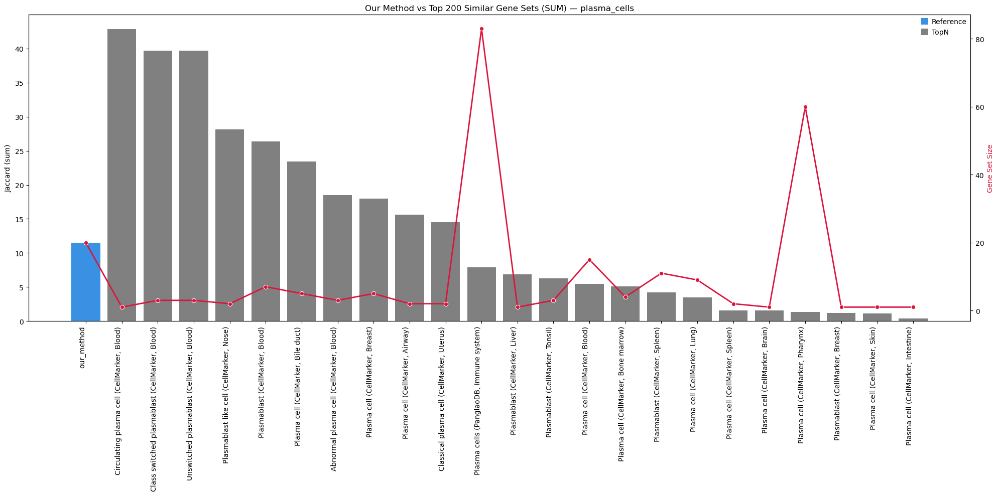
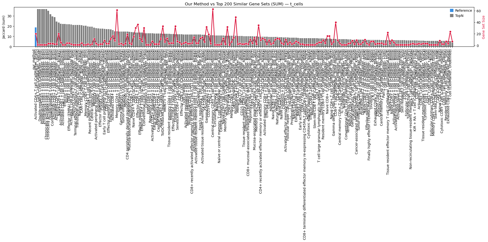

Single-Cell Gene Set Enrichment & Marker Selection Pipeline
SUMMARY
Load the preprocessed AnnData object and configure computing resources.
Remove specific gene families (MT, RBS, hemoglobin) to improve clustering signal.
Execute normalization, log-transformation, and scaling.
Iteratively query a combined reference database (PanglaoDB, CellMarker, etc.) to curate cell-type specific gene signatures.
Run Over-Representation Analysis (ORA) using
decouplerto score cell identity probabilities.Benchmarking selected marker sets against the global database using Jaccard Similarity indices.
Generate dual-axis plots comparing marker set similarity and size to ensure robustness.
1. Gene Filtering & Preprocessing
Configuration: Access
adata.uns["config"]["qc"]["gene_identifiers"]to define gene sets.Exclusion Criteria: Remove genes related to:
Energy/Stress: Mitochondrial (
MT) and Ribosomal (RBS) genes (often drive technical batch effects).Artifacts: Hemoglobin (
HG) and Pseudogenes.
Execution: Run
sc_code.Run_all_prep_steps_clusteringto normalize, log-transform, and scale the data (results stored inadata.X).
2. Curated Marker Selection
Database Loading: Load a massive
combined_databasecontaining markers from multiple public repositories.Iterative Querying: Use
sc_utils.search_databaseto find markers for specific lineages:Immune: T cells, B cells, NK cells, Macrophages, Dendritic cells, Plasma cells.
Structural: Endothelial cells.
States: Activated vs. Exhausted phenotypes.
Scoring: Use
sc_utils.get_element_and_counts_with_positional_sumto rank genes based on frequency and specificity across databases.Storage: Compile selected top \(N\) genes (default 20) into
adata.uns["genesets"]["cell_type_markers"].
3. Decoupler ORA Scoring
Layer Switching: Switch
adata.Xtolog2norm_counts(ORA requires normalized, non-negative data, not scaled Z-scores).Enrichment: Run
sc_code.run_decouplerusing the curatedgse_marker_dict.Cleanup: Reset
adata.X = Noneto optimize memory usage (removing the dense scaled matrix).Save: Export intermediate object to
02_tonsil_blood_DISCO_clustering_preprocessed.h5ad.
4. Validation: Jaccard Similarity Benchmarking
Objective: Validate that the selected marker sets are representative and distinct compared to the rest of the database.
Metric: Calculate Jaccard Index (Intersection over Union) between:
Our Method vs. Rest: How similar our selected markers are to the remaining database entries.
Refined Groups: Internal consistency within the database.
Logic:
Computes overlap counts, removed genes, and kept genes.
Identifies if the selected markers capture the core identity of the cell type better than random database subsets.
5. Validation Visualization
Plotting: Generate complex bar plots for each cell type.
Primary Axis: Jaccard Similarity score (Bar).
Secondary Axis: Gene Set Size (Line).
Interpretation: Compares “Our Method” against the top 200 similar gene sets to visualize performance ranking.
Export: Saves high-resolution PDFs to
../Figures/barplots.
Imports
[1]:
# Enable autoreloading, delete this for deploying!!!
%load_ext autoreload
%autoreload 2
%load_ext memory_profiler
[2]:
%%time
import os # Provides functions to interact with the operating system
# NOTE: UNCOMMENT IF NO GPU AVAILABLE!
os.environ["CUDA_VISIBLE_DEVICES"] = "0" # Adjust device IDs as per your setup,
# IBMS Libraries
from scToolkit import sc_code
from scToolkit import sc_plots
from scToolkit import sc_utils
from scToolkit import utils
# Some libraries (e.g., decoupler) may require setting rarely used parallelization
# backends. This function ensures all common thread settings are configured.
# utils.set_threads(10)
/projects/Research/Internal/Proximap/ssd/envs/scToolkit_check_TD/proximap_stable_28_08_2025/lib/python3.12/site-packages/louvain/__init__.py:54: UserWarning: pkg_resources is deprecated as an API. See https://setuptools.pypa.io/en/latest/pkg_resources.html. The pkg_resources package is slated for removal as early as 2025-11-30. Refrain from using this package or pin to Setuptools<81.
from pkg_resources import get_distribution, DistributionNotFound
CUDA devices visible: 0
CPU times: user 7.37 s, sys: 520 ms, total: 7.89 s
Wall time: 4.12 s
[3]:
# Other general libraries that might be hepflull for analysis
import re # Enables regular expression matching and text processing
import time # Offers time-related functions (e.g., sleep, timestamps)
# in Python, most assignments are references (symbolic links), not copies
from copy import deepcopy as copy # Creates deep copies of complex objects
import scanpy as sc # Toolkit for analyzing single-cell gene expression data
import anndata as ad # Provides AnnData structure for annotated data matrices
import seaborn as sns # Simplifies creation of attractive statistical plots
import numpy as np # Supports numerical operations and N-dimensional arrays
import pandas as pd # Offers data structures and tools for data analysis
import matplotlib.pyplot as plt # Enables plotting and figure customization
from itertools import combinations # Generates all k-length combinations of an iterable
import scipy.stats as stats # Contains statistical distributions and test functions
# Define rcParams for customization, notebook showing is figure.dpi, reduce to not overload the nootebook sizes
plt.rcParams.update({
# "figure.figsize": (8, 6), # Figure size in inches
"savefig.dpi": 400, # Dots per inch for saved figures
"figure.dpi": 100, # Dots per inch for saved figures
#"axes.titlesize": 16, # Title font size
#"axes.labelsize": 14, # Label font size
#"xtick.labelsize": 12, # X-axis tick label size
#"ytick.labelsize": 12 # Y-axis tick label size
})
# Setup matplotlib notebook backend
%matplotlib inline
[4]:
start = time.time()
Load the Adata object
[5]:
%%time
adata = sc_code.load_h5ad("../data/01_tonsil_blood_DISCO_preprocessed.h5ad")
CPU times: user 24.2 s, sys: 2.28 s, total: 26.5 s
Wall time: 26.5 s
Object Preprocessing for GSE and clustering
IMPORTANT - THIS IS A MUST READ!!!!
[6]:
adata.uns["config"]["qc"]["gene_identifiers"].keys()
[6]:
dict_keys(['HK_gtex', 'HK_cellminer', 'HK_hpa', 'HK_klijn', 'HK_human', 'HK_hrt', 'HK_hk_union', 'HK_hk_intersect', 'HK_hk_intersect_no_hrt', 'GTF_IG_genes', 'GTF_processed_transcripts', 'GTF_pseudogenes', 'GTF_TR_genes', 'GTF_RBS', 'GTF_protein_coding', 'HGNC_non_coding_RNA', 'HGNC_other', 'HGNC_protein_coding_gene', 'HGNC_pseudogene', 'MT', 'RBS', 'MTRBS', 'PSEUDO', 'HG'])
[7]:
# Setup genes to exclude based on biological irrelevance and artifacts
# The qc genesets are saved in:
# adata.uns["config"]["qc"]["gene_identifiers"].keys()
#['mousekeeping', 'hrt', 'IG_genes', 'processed_transcripts', 'pseudogenes', 'TR_genes',
# 'MT', 'RBS', 'protein_coding', 'MTRBS', 'death', 'NIMA', 'meiosis', 'cell_division', 'cell_replication',
# 'cell_cycle', 'GTPase', 'ATPase', 'defensin', 'heat_shock', 'stress', 'caspase', 'TNF', 'inflam_2', 'oncogene', 'HG']
# Most of them are necessary, but there are genes where differences in expression
# are driven by biological processes not relevant to the analysis — for example,
# genes related to energy production (such as mitochondrial [MT] and ribosomal
# [RBS] genes), replication, or potential artifacts (such as hemoglobin [HG]
# genes), as well as TEC (to be experimentally confirmed) and pseudogenes.
# adding custom genesets via:
# adata.uns["config"]["qc"]["gene_identifiers"]["custom"] = "^Gene1$|reg.*ex" # Read a regex tutorial if you don't understand this
# Here we remove the Mitochondrial, ribosomoal, mitoribosomal, TEC genes and pseudogenes
# Adjust this to your needs.
adata.uns["config"]["exclude_gene_family_regex"] = [
adata.uns["config"]["qc"]["gene_identifiers"][x]
for x in ["MT", "HG", "RBS", "PSEUDO"]]
# NOTE: You have to be certain about gene removal; excluding relevant genes may
# hurt performance. Sometimes this is an iterative process
# for example, PBMC clustering may require removing TCR genes.
Setup: Genes to Exclude Based on Biological Irrelevance and Artifacts
The QC genesets are stored in:
adata.uns["config"]["qc"]["gene_identifiers"].keys()
mousekeeping, hrt, IG_genes, processed_transcripts, pseudogenes,TR_genes, MT, RBS, protein_coding, MTRBS, death,NIMA, meiosis, cell_division, cell_replication, cell_cycle,GTPase, ATPase, defensin, heat_shock, stress,caspase, TNF, inflam_2, oncogene, HGSome gene groups reflect processes unrelated to the biological focus of your analysis — for example:
Energy metabolism: mitochondrial (
MT), ribosomal (RBS,MTRBS)Artifacts: hemoglobin (
HG)Non-informative: pseudogenes, TEC (to be validated)
These can be excluded to reduce irrelevant biological or technical signals.
To add custom gene sets:
adata.uns["config"]["qc"]["gene_identifiers"]["custom_regex"] = "^GENE1$|reg.*ex"adata.uns["config"]["qc"]["gene_identifiers"]["custom_list"] = [GENE1, "GENE2"]To define which gene families to exclude:
adata.uns["config"]["exclude_gene_family_regex"] = [
adata.uns["config"]["qc"]["gene_identifiers"][x]
for x in ["MT", "HG", "GTF_RBS", "GTF_pseudogenes"]]
Note: You have to be certain about gene removal; excluding relevant genes mayhurt performance. Sometimes this is an iterative processfor example, PBMC clustering may require removing TCR genes.
[8]:
# Run the Preprocessing for GSE and Clustering
# This function performs a series of preprocessing steps on the provided AnnData object, including
# filtering genes, normalization, log-transforming, scaling, and regression. The steps are configurable based on the
# settings in `adata.uns["config"]`. It also handles saving intermediate results in `adata.layers`
# and updating the preprocessing status in `adata.uns["stats"]["preprocessors_ran"]`.
# NOTE: We filtering here refers to the gene removal by geneset we defined in the previous cell
adata = sc_code.Run_all_prep_steps_clustering(adata)
# NOTE: After the execution the adata.X is scaled, which is default for the PCA but not used anywhere else.
# ALWAYS CHECK WHICH DATA FORMAT EACH ALGORITHM REQUIRES — CALCULATING DEGs ON Z-SCORES IS INCORRECT!
INFO:sc_code.py:Run_all_prep_steps_clustering - ################################################################################
Started Raw Count Preprocessing
################################################################################
INFO:sc_code.py:Run_all_prep_steps_clustering - Running Regex gene exclusion
INFO:sc_code.py:Run_all_prep_steps_clustering - Normalization time: 9.996161460876465
INFO:sc_code.py:Run_all_prep_steps_clustering - Scaling data...
INFO:sc_code.py:Run_all_prep_steps_clustering - ################################################################################
Finished RNA Preprocessing after 71.97963285446167 seconds
################################################################################
[9]:
# NOTE: Here we can see the layers now and that we have less genes.
adata
[9]:
AnnData object with n_obs × n_vars = 573115 × 8497
obs: 'orig.ident', 'ncount_rna', 'nfeature_rna', 'sample', 'sample_id', 'project_id', 'sample_type', 'disease', 'tissue', 'platform', 'disease_subtype', 'time_point', 'subject_id', 'age', 'gender', 'race', 'infection', 'disease_stage', 'mutation', 'predicted_cell_type', 'ct', 'sub.cluster', 'pct_gtex', 'pct_hpa', 'pct_hrt', 'pct_cellminer', 'pct_klijn', 'pct_IG_C_gene', 'pct_IG_C_pseudogene', 'pct_IG_J_gene', 'pct_IG_V_gene', 'pct_IG_V_pseudogene', 'pct_TR_C_gene', 'pct_TR_J_gene', 'pct_TR_J_pseudogene', 'pct_TR_V_gene', 'pct_TR_V_pseudogene', 'pct_lncRNA', 'pct_miRNA', 'pct_protein_coding', 'pct_ribozyme', 'pct_snRNA', 'pct_snoRNA', 'pct_pseudogenes_hg', 'n_unique', 'study_category', 'barcode', 'donor_id', 'gem_id', 'library_name', 'assay', 'sex', 'age_group', 'hospital', 'cohort_type', 'cause_for_tonsillectomy', 'is_hashed', 'preservation', 'annotation_level_1', 'annotation_level_1_probability', 'annotation_figure_1', 'annotation_20220215', 'annotation_20220619', 'annotation_20230508', 'annotation_20230508_probability', 'UMAP_1_level_1', 'UMAP_2_level_1', 'UMAP_1_20220215', 'UMAP_2_20220215', 'UMAP_1_20230508', 'UMAP_2_20230508', 'type', 'projectid', 'cell_sorting', 'subjectid', 'processstatus', 'rna_snn_res.0.8', 'seurat_clusters', 'percent.mt', 'percent.rp', 'ct_fixed', 'ct_broad', 'ct_finegrained_combined', 'n_genes', 'n_counts', 'pct_HK_gtex', 'pct_HK_cellminer', 'pct_HK_hpa', 'pct_HK_klijn', 'pct_HK_human', 'pct_HK_hrt', 'pct_HK_hk_union', 'pct_HK_hk_intersect', 'pct_HK_hk_intersect_no_hrt', 'pct_GTF_IG_genes', 'pct_GTF_processed_transcripts', 'pct_GTF_pseudogenes', 'pct_GTF_TR_genes', 'pct_GTF_RBS', 'pct_GTF_protein_coding', 'pct_HGNC_non_coding_RNA', 'pct_HGNC_other', 'pct_HGNC_protein_coding_gene', 'pct_HGNC_pseudogene', 'pct_MT', 'pct_RBS', 'pct_MTRBS', 'pct_PSEUDO', 'pct_HG', 'max_count', 'top_5_ratio', 'top_10_ratio', 'good_quality'
var: 'HK_gtex', 'HK_cellminer', 'HK_hpa', 'HK_klijn', 'HK_human', 'HK_hrt', 'HK_hk_union', 'HK_hk_intersect', 'HK_hk_intersect_no_hrt', 'GTF_IG_genes', 'GTF_processed_transcripts', 'GTF_pseudogenes', 'GTF_TR_genes', 'GTF_RBS', 'GTF_protein_coding', 'HGNC_non_coding_RNA', 'HGNC_other', 'HGNC_protein_coding_gene', 'HGNC_pseudogene', 'MT', 'RBS', 'MTRBS', 'PSEUDO', 'HG', 'n_cells', 'mean_counts', 'n_counts', 'n_unique', 'pct_cells', 'max_count', 'good_quality', 'highly_variable', 'highly_variable_rank', 'highly_variable_rank_binned', 'mean', 'std'
uns: 'config', 'stats'
obsm: 'X_pca', 'X_umap'
layers: 'counts', 'norm_counts', 'log2norm_counts', 'scaled'
[10]:
# Run the Preprocessing for GSE and Clustering
# This function performs a series of preprocessing steps on the provided AnnData object, including
# filtering genes, normalization, log-transforming, scaling, and regression. The steps are configurable based on the
# settings in `adata.uns["config"]`. It also handles saving intermediate results in `adata.layers`
# and updating the preprocessing status in `adata.uns["stats"]["preprocessors_ran"]`.
# NOTE: We filtering here refers to the gene removal by geneset we defined in the previous cell
adata = sc_code.Run_all_prep_steps_clustering(adata)
# NOTE: After the execution the adata.X is scaled, which is default for the PCA but not used anywhere else.
# ALWAYS CHECK WHICH DATA FORMAT EACH ALGORITHM REQUIRES — CALCULATING DEGs ON Z-SCORES IS INCORRECT!
WARNING:sc_code.py:Run_all_prep_steps_clustering - You already ran the Run_all_prep_steps_clustering, skipping re-execution!
GSE Marker Scoring
Cell Types
Get the Genesets
[11]:
combined_database = sc_code.get_ref_db(
db="Combined", organism="human") # Default databases are ["PanglaoDB", "CellMarker", "SCType", "CellTypist"],
# These are the most common cell type databases in one table
combined_database.head(2)
[11]:
| genesymbol | cell_type | germ_layer | specificity | tissue | presence | db | tissue_specific | cancer_type | condition | other_marker_name | gene_function | genesymbol_down | |
|---|---|---|---|---|---|---|---|---|---|---|---|---|---|
| 1 | CTRB1 | Acinar cells | Endoderm | 0.000629 | Pancreas | 0.017 | PanglaoDB | NaN | NaN | NaN | NaN | NaN | NaN |
| 2 | KLK1 | Endothelial cells | Mesoderm | 0.008420 | Vasculature | 0.013 | PanglaoDB | NaN | NaN | NaN | NaN | NaN | NaN |
[12]:
combined_database["db"].unique()
[12]:
array(['PanglaoDB', 'CellTypist', 'CellMarker', 'SCType'], dtype=object)
genesymbol: Gene symbol (official short name of the gene).
cell_type: Cell type where the gene is predominantly expressed.
germ_layer: Embryonic germ layer origin (e.g., endoderm, ectoderm, mesoderm).
specificity: Specificity score indicating how uniquely the gene marks this cell type.
tissue: Tissue where the gene is primarily expressed.
presence: Frequency or fraction of cells expressing this gene in the tissue.
db: Source database or reference for the marker information.
tissue_specific: Whether the gene is considered tissue-specific (if annotated).
cancer_type: Associated cancer type, if relevant.
condition: Condition or disease context for this gene, if applicable.
other_marker_name: Alternative marker names or aliases.
gene_function: Known biological function of the gene.
genesymbol_down: Related downregulated gene symbol, if applicable.
Tutorial how to search the database
Use search_database to flexibly filter a column using OR, AND, and NOT terms, with optional case sensitivity.
search_database(db, search_term_or=["mitophagy", "pexophagy"])search_database(db, search_term_and="astro")search_database(db, search_term_or=["mitophagy", "pexophagy"], search_term_and=["gobp"])search_database(db, search_term_or=["mitophagy", "pexophagy"], search_term_and=["gobp"], search_term_not_and=["response"])lower_search_space_and=False, lower_search_space_or=False, etc., to make searches case-sensitive. By default, all are True (case-insensitive).mask = search_database(db, search_term_and="astro", return_indices=True); db[mask][13]:
# This is an iterative process; you should check the gene set names after each change
# to refine the final list.
cell_types = sc_utils.search_database(
combined_database,
search_term_or=["T Cell"],
lower_search_space_or=False,
)
print(f"Number of cell types matching exactly 'T Cell': {len(cell_types)}")
cell_types = sc_utils.search_database(
combined_database,
search_term_or=["T Cell", "T cell", "T-cell", "T-Cell"],
lower_search_space_or=False,
)
print(f"Number of cell types matching any T Cell variants: {len(cell_types)}")
cell_types = sc_utils.search_database(
combined_database,
search_term_or=["T Cell", "T cell", "T-cell", "T-Cell"],
lower_search_space_or=False,
search_term_not_or=["natural killer", "nk"],
)
print(f"Number of T cell-related types excluding NK cells: {len(cell_types)}")
Number of cell types matching exactly 'T Cell': 2
Number of cell types matching any T Cell variants: 191
Number of T cell-related types excluding NK cells: 185
Tutorial how to select genes per cell-type
The function get_element_and_counts_with_positional_sum summarizes marker genes across selected cell types or groups.
Example output columns
gene |
gs_count |
gs_count_pct |
total_count |
cell_types |
highly_variable_rank |
|---|---|---|---|---|---|
Cd8a |
56 |
17.39 |
86 |
T cells, Effector CD8+ T cell, … |
35.0 |
gene: Gene symbol.
gs_count: Number of times this gene appears in your subsetted group.
gs_count_pct: Percentage of group cell types expressing this gene.
total_count: Total times this gene appears across the whole database.
cell_types: All cell types where this gene was found (joined as a string).
highly_variable_rank: Rank of gene variability (added if
adataprovided).
How to use - and for manuall refinement
.head(5) to show first 5 rows):gene_list = sc_utils.get_element_and_counts_with_positional_sum(subsetted_df, combined_database, adata=adata); print(gene_list[:n_genes])marker_dict[this_ct_key] = sc_utils.get_element_and_counts_with_positional_sum(subsetted_df, combined_database, adata=adata)[:n_genes]df = sc_utils.get_element_and_counts_with_positional_sum( subsetted_df, combined_database, adata=adata, return_list=False, sort_columns=["gs_count", "highly_variable_rank"], ascending=[False, True] )
Get the cell-type marker_dict
[14]:
# Define the number of genes per gene set
n_genes = 20
# create the empyt marker dict
ct_marker_dict = {}
############################################################################################################################################
# Immune and Blood cell
############################################################################################################################################
this_ct_key = "plasma_cells"
print("#" * 80)
print(this_ct_key)
print("#" * 80)
cell_types = sc_utils.search_database(
combined_database, "plasm",
search_term_not_or=["b cell", "dendritic", "malig", "abnorm"],)
subsetted_df = combined_database[combined_database["cell_type"].isin(cell_types)]
ct_marker_dict[this_ct_key] = sc_utils.get_element_and_counts_with_positional_sum(subsetted_df, combined_database)[:n_genes]
############################################################################################################################################
this_ct_key = "macrophage_cells"
print("#" * 80)
print(this_ct_key)
print("#" * 80)
cell_types = sc_utils.search_database(combined_database, "macro")
subsetted_df = combined_database[combined_database["cell_type"].isin(cell_types)]
ct_marker_dict[this_ct_key] = sc_utils.get_element_and_counts_with_positional_sum(subsetted_df, combined_database)[:n_genes]
############################################################################################################################################
this_ct_key = "dendritic_cells"
print("#" * 80)
print(this_ct_key)
print("#" * 80)
cell_types = sc_utils.search_database(combined_database, "dendri")
subsetted_df = combined_database[combined_database["cell_type"].isin(cell_types)]
ct_marker_dict[this_ct_key] = sc_utils.get_element_and_counts_with_positional_sum(subsetted_df, combined_database)[:n_genes]
###########################################################################################
this_ct_key = "b_cells"
print("#" * 80)
print(this_ct_key)
print("#" * 80)
cell_types = sc_utils.search_database(
combined_database,
search_term_or=["B Cell", "B cell", "B-cell", "B-Cell"],
lower_search_space_or=False,
search_term_not_or=["natural killer", "nk"],
)
subsetted_df = combined_database[combined_database["cell_type"].isin(cell_types)]
ct_marker_dict[this_ct_key] = sc_utils.get_element_and_counts_with_positional_sum(subsetted_df, combined_database)[:n_genes]
###########################################################################################
this_ct_key = "t_cells"
print("#" * 80)
print(this_ct_key)
print("#" * 80)
cell_types = sc_utils.search_database(
combined_database,
search_term_or=["T Cell", "T cell", "T-cell", "T-Cell"],
lower_search_space_or=False,
search_term_not_or=["natural killer", "nk"],
)
subsetted_df = combined_database[combined_database["cell_type"].isin(cell_types)]
ct_marker_dict[this_ct_key] = sc_utils.get_element_and_counts_with_positional_sum(subsetted_df, combined_database)[:n_genes]
###########################################################################################
this_ct_key = "nk_cells"
print("#" * 80)
print(this_ct_key)
print("#" * 80)
cell_types = sc_utils.search_database(
combined_database,
search_term_or=["natural killer", "nk"],
lower_search_space_or=True,
search_term_not_or=[
"T Cell", "T cell", "T-cell", "T-Cell",
"B Cell", "B cell", "B-cell", "B-Cell"
],
lower_search_space_not_or=False,
)
subsetted_df = combined_database[combined_database["cell_type"].isin(cell_types)]
ct_marker_dict[this_ct_key] = sc_utils.get_element_and_counts_with_positional_sum(subsetted_df, combined_database)[:n_genes]
###########################################################################################
this_ct_key = "activated_cells"
print("#" * 80)
print(this_ct_key)
print("#" * 80)
a = sc_utils.search_database(
combined_database,
search_term_or=["T Cell", "T cell", "T-cell", "T-Cell"],
lower_search_space_or=False,
search_term_not_or=["natural killer", "nk"],
)
b = sc_utils.search_database(combined_database, "activated")
cell_types = np.intersect1d(a, b)
subsetted_df = combined_database[combined_database["cell_type"].isin(cell_types)]
ct_marker_dict[this_ct_key] = sc_utils.get_element_and_counts_with_positional_sum(subsetted_df, combined_database)[:n_genes]
###########################################################################################
this_ct_key = "exhausted_cells"
print("#" * 80)
print(this_ct_key)
print("#" * 80)
a = sc_utils.search_database(
combined_database,
search_term_or=["T Cell", "T cell", "T-cell", "T-Cell"],
lower_search_space_or=False,
search_term_not_or=["natural killer", "nk"],
)
b = sc_utils.search_database(combined_database, "exhausted")
cell_types = np.intersect1d(a, b)
subsetted_df = combined_database[combined_database["cell_type"].isin(cell_types)]
ct_marker_dict[this_ct_key] = sc_utils.get_element_and_counts_with_positional_sum(subsetted_df, combined_database)[:n_genes]
############################################################################################################################################
this_ct_key = "endothelial_cells"
print("#" * 80)
print(this_ct_key)
print("#" * 80)
cell_types = sc_utils.search_database(
combined_database,
search_term_or=["endothe"],
)
subsetted_df = combined_database[combined_database["cell_type"].isin(cell_types)]
ct_marker_dict[this_ct_key] = sc_utils.get_element_and_counts_with_positional_sum(
subsetted_df, combined_database
)[:n_genes]
############################################################################################################################################
this_ct_key = "granulocyte_cells"
print("#" * 80)
print(this_ct_key)
print("#" * 80)
cell_types = sc_utils.search_database(
combined_database,
search_term_or=["granuloc", "eosin", "baso"],
)
subsetted_df = combined_database[combined_database["cell_type"].isin(cell_types)]
ct_marker_dict[this_ct_key] = sc_utils.get_element_and_counts_with_positional_sum(
subsetted_df, combined_database
)[:n_genes]
####################################
# Grouping the cell types and save the info in the adata.uns
general_cells = [
"plasma_cells", "macrophage_cells", "dendritic_cells", "b_cells",
"t_cells", "nk_cells", "endothelial_cells",
"granulocyte_cells"
]
activated_exhauseted_cells = [
"activated_cells", "exhausted_cells"
]
# malignant_cells = [
# "malginant_cells", "aml_cells"
# ]
adata.uns["cell_type_info"] = {}
adata.uns["cell_type_info"]["general_cells"] = general_cells
adata.uns["cell_type_info"]["activated_exhauseted_cells"] = activated_exhauseted_cells
################################################################################
plasma_cells
################################################################################
################################################################################
macrophage_cells
################################################################################
################################################################################
dendritic_cells
################################################################################
################################################################################
b_cells
################################################################################
################################################################################
t_cells
################################################################################
################################################################################
nk_cells
################################################################################
################################################################################
activated_cells
################################################################################
################################################################################
exhausted_cells
################################################################################
################################################################################
endothelial_cells
################################################################################
################################################################################
granulocyte_cells
################################################################################
Grouping and saving in the adata object
[15]:
# Store the genesets at the correct postion for the automated donwstream processing
adata.uns["genesets"] = {}
adata.uns["genesets"]["cell_type_markers"] = copy(ct_marker_dict)
# Create the full marker dict for GSE, then we only need to perform one run
gse_marker_dict = {}
gse_marker_dict.update(ct_marker_dict)
Running GSE - ORA with significance thresholds
[16]:
# NOTE: For GSE we need log norm data
adata.X = adata.layers["log2norm_counts"].copy()
# NOTE: The copy is mandatory, because Decoupler sometimes fails and replaces values in the data
# As well as the scanpy default cluster preprocessing functions (PCA, Neighbors, ...)
[17]:
%%time
sc_code.run_decoupler(
adata, run_type="ora", ref=gse_marker_dict, verbose=True, min_n=3)
Running ora on mat with 573115 samples and 8497 targets for 10 sources.
100%|█████████████████████████████████████████████████████████████████████████| 573115/573115 [03:24<00:00, 2798.62it/s]
CPU times: user 2h 30min 17s, sys: 6.46 s, total: 2h 30min 23s
Wall time: 3min 39s
[18]:
adata
[18]:
AnnData object with n_obs × n_vars = 573115 × 8497
obs: 'orig.ident', 'ncount_rna', 'nfeature_rna', 'sample', 'sample_id', 'project_id', 'sample_type', 'disease', 'tissue', 'platform', 'disease_subtype', 'time_point', 'subject_id', 'age', 'gender', 'race', 'infection', 'disease_stage', 'mutation', 'predicted_cell_type', 'ct', 'sub.cluster', 'pct_gtex', 'pct_hpa', 'pct_hrt', 'pct_cellminer', 'pct_klijn', 'pct_IG_C_gene', 'pct_IG_C_pseudogene', 'pct_IG_J_gene', 'pct_IG_V_gene', 'pct_IG_V_pseudogene', 'pct_TR_C_gene', 'pct_TR_J_gene', 'pct_TR_J_pseudogene', 'pct_TR_V_gene', 'pct_TR_V_pseudogene', 'pct_lncRNA', 'pct_miRNA', 'pct_protein_coding', 'pct_ribozyme', 'pct_snRNA', 'pct_snoRNA', 'pct_pseudogenes_hg', 'n_unique', 'study_category', 'barcode', 'donor_id', 'gem_id', 'library_name', 'assay', 'sex', 'age_group', 'hospital', 'cohort_type', 'cause_for_tonsillectomy', 'is_hashed', 'preservation', 'annotation_level_1', 'annotation_level_1_probability', 'annotation_figure_1', 'annotation_20220215', 'annotation_20220619', 'annotation_20230508', 'annotation_20230508_probability', 'UMAP_1_level_1', 'UMAP_2_level_1', 'UMAP_1_20220215', 'UMAP_2_20220215', 'UMAP_1_20230508', 'UMAP_2_20230508', 'type', 'projectid', 'cell_sorting', 'subjectid', 'processstatus', 'rna_snn_res.0.8', 'seurat_clusters', 'percent.mt', 'percent.rp', 'ct_fixed', 'ct_broad', 'ct_finegrained_combined', 'n_genes', 'n_counts', 'pct_HK_gtex', 'pct_HK_cellminer', 'pct_HK_hpa', 'pct_HK_klijn', 'pct_HK_human', 'pct_HK_hrt', 'pct_HK_hk_union', 'pct_HK_hk_intersect', 'pct_HK_hk_intersect_no_hrt', 'pct_GTF_IG_genes', 'pct_GTF_processed_transcripts', 'pct_GTF_pseudogenes', 'pct_GTF_TR_genes', 'pct_GTF_RBS', 'pct_GTF_protein_coding', 'pct_HGNC_non_coding_RNA', 'pct_HGNC_other', 'pct_HGNC_protein_coding_gene', 'pct_HGNC_pseudogene', 'pct_MT', 'pct_RBS', 'pct_MTRBS', 'pct_PSEUDO', 'pct_HG', 'max_count', 'top_5_ratio', 'top_10_ratio', 'good_quality'
var: 'HK_gtex', 'HK_cellminer', 'HK_hpa', 'HK_klijn', 'HK_human', 'HK_hrt', 'HK_hk_union', 'HK_hk_intersect', 'HK_hk_intersect_no_hrt', 'GTF_IG_genes', 'GTF_processed_transcripts', 'GTF_pseudogenes', 'GTF_TR_genes', 'GTF_RBS', 'GTF_protein_coding', 'HGNC_non_coding_RNA', 'HGNC_other', 'HGNC_protein_coding_gene', 'HGNC_pseudogene', 'MT', 'RBS', 'MTRBS', 'PSEUDO', 'HG', 'n_cells', 'mean_counts', 'n_counts', 'n_unique', 'pct_cells', 'max_count', 'good_quality', 'highly_variable', 'highly_variable_rank', 'highly_variable_rank_binned', 'mean', 'std'
uns: 'config', 'stats', 'cell_type_info', 'genesets'
obsm: 'X_pca', 'X_umap', 'ora_estimate', 'ora_pvals'
layers: 'counts', 'norm_counts', 'log2norm_counts', 'scaled'
[19]:
# Saving the data layers twice creates a overhead, we remove the X layer here.
# it was scaled data, so dense and therefore basically having more than 70% of
# the size of the object. Having it twice is inefficient
# NOTE: BUT Scanpys functions don't check if the X is none, so make sure to reset the X to the desired layer!
adata.X = None
Rest
[20]:
end = time.time() - start
print(f"Finished Full Preprocessing in {end:.2f} seconds.")
Finished Full Preprocessing in 332.11 seconds.
[21]:
%%time
sc_code.save_h5ad(adata, "../data/02_tonsil_blood_DISCO_clustering_preprocessed.h5ad", compression="lzf")
CPU times: user 3min 18s, sys: 6.75 s, total: 3min 25s
Wall time: 3min 25s
[22]:
adata
[22]:
AnnData object with n_obs × n_vars = 573115 × 8497
obs: 'orig.ident', 'ncount_rna', 'nfeature_rna', 'sample', 'sample_id', 'project_id', 'sample_type', 'disease', 'tissue', 'platform', 'disease_subtype', 'time_point', 'subject_id', 'age', 'gender', 'race', 'infection', 'disease_stage', 'mutation', 'predicted_cell_type', 'ct', 'sub.cluster', 'pct_gtex', 'pct_hpa', 'pct_hrt', 'pct_cellminer', 'pct_klijn', 'pct_IG_C_gene', 'pct_IG_C_pseudogene', 'pct_IG_J_gene', 'pct_IG_V_gene', 'pct_IG_V_pseudogene', 'pct_TR_C_gene', 'pct_TR_J_gene', 'pct_TR_J_pseudogene', 'pct_TR_V_gene', 'pct_TR_V_pseudogene', 'pct_lncRNA', 'pct_miRNA', 'pct_protein_coding', 'pct_ribozyme', 'pct_snRNA', 'pct_snoRNA', 'pct_pseudogenes_hg', 'n_unique', 'study_category', 'barcode', 'donor_id', 'gem_id', 'library_name', 'assay', 'sex', 'age_group', 'hospital', 'cohort_type', 'cause_for_tonsillectomy', 'is_hashed', 'preservation', 'annotation_level_1', 'annotation_level_1_probability', 'annotation_figure_1', 'annotation_20220215', 'annotation_20220619', 'annotation_20230508', 'annotation_20230508_probability', 'UMAP_1_level_1', 'UMAP_2_level_1', 'UMAP_1_20220215', 'UMAP_2_20220215', 'UMAP_1_20230508', 'UMAP_2_20230508', 'type', 'projectid', 'cell_sorting', 'subjectid', 'processstatus', 'rna_snn_res.0.8', 'seurat_clusters', 'percent.mt', 'percent.rp', 'ct_fixed', 'ct_broad', 'ct_finegrained_combined', 'n_genes', 'n_counts', 'pct_HK_gtex', 'pct_HK_cellminer', 'pct_HK_hpa', 'pct_HK_klijn', 'pct_HK_human', 'pct_HK_hrt', 'pct_HK_hk_union', 'pct_HK_hk_intersect', 'pct_HK_hk_intersect_no_hrt', 'pct_GTF_IG_genes', 'pct_GTF_processed_transcripts', 'pct_GTF_pseudogenes', 'pct_GTF_TR_genes', 'pct_GTF_RBS', 'pct_GTF_protein_coding', 'pct_HGNC_non_coding_RNA', 'pct_HGNC_other', 'pct_HGNC_protein_coding_gene', 'pct_HGNC_pseudogene', 'pct_MT', 'pct_RBS', 'pct_MTRBS', 'pct_PSEUDO', 'pct_HG', 'max_count', 'top_5_ratio', 'top_10_ratio', 'good_quality'
var: 'HK_gtex', 'HK_cellminer', 'HK_hpa', 'HK_klijn', 'HK_human', 'HK_hrt', 'HK_hk_union', 'HK_hk_intersect', 'HK_hk_intersect_no_hrt', 'GTF_IG_genes', 'GTF_processed_transcripts', 'GTF_pseudogenes', 'GTF_TR_genes', 'GTF_RBS', 'GTF_protein_coding', 'HGNC_non_coding_RNA', 'HGNC_other', 'HGNC_protein_coding_gene', 'HGNC_pseudogene', 'MT', 'RBS', 'MTRBS', 'PSEUDO', 'HG', 'n_cells', 'mean_counts', 'n_counts', 'n_unique', 'pct_cells', 'max_count', 'good_quality', 'highly_variable', 'highly_variable_rank', 'highly_variable_rank_binned', 'mean', 'std'
uns: 'cell_type_info', 'genesets', 'config', 'stats'
obsm: 'X_pca', 'X_umap', 'ora_estimate', 'ora_pvals'
layers: 'counts', 'norm_counts', 'log2norm_counts', 'scaled'
[23]:
from scToolkit import (Any, pd, ad, validate_groupby_column,
Counter, defaultdict)
def jaccard_numpy(a, b):
a = np.unique(a)
b = np.unique(b)
all_genes = np.union1d(a, b)
mask_a = np.isin(all_genes, a)
mask_b = np.isin(all_genes, b)
inter = np.logical_and(mask_a, mask_b).sum()
union = np.logical_or(mask_a, mask_b).sum()
return inter / union if union > 0 else 0.0
def get_cell_types(combined_database: pd.DataFrame, use_this_ct: str) -> list[str]:
"""
Retrieve matching cell-type names from a database based on category key.
Args:
combined_database (pd.DataFrame): Database containing cell-type names.
use_this_ct (str): Cell-type category to query (e.g., "b_cells").
Returns:
list[str]: Matched cell-type names.
"""
# #########################################################
# Match-case block for supported cell-type identifiers
# #########################################################
match use_this_ct:
case "plasma_cells":
return sc_utils.search_database(
combined_database,
"plasm",
search_term_not_or=["b cell", "dendritic", "malig",],
)
case "macrophage_cells":
return sc_utils.search_database(combined_database, "macro")
case "dendritic_cells":
return sc_utils.search_database(combined_database, "dendri")
case "b_cells":
return sc_utils.search_database(
combined_database,
search_term_or=["B Cell", "B cell", "B-cell", "B-Cell"],
lower_search_space_or=False,
search_term_not_or=["natural killer", "nk"],
)
case "t_cells":
return sc_utils.search_database(
combined_database,
search_term_or=["T Cell", "T cell", "T-cell", "T-Cell"],
lower_search_space_or=False,
search_term_not_or=["natural killer", "nk"],
)
case "nk_cells":
return sc_utils.search_database(
combined_database,
search_term_or=["natural killer", "nk"],
lower_search_space_or=True,
search_term_not_or=[
"T Cell", "T cell", "T-cell", "T-Cell",
"B Cell", "B cell", "B-cell", "B-Cell",
],
lower_search_space_not_or=False,
)
case "activated_cells":
a = sc_utils.search_database(
combined_database,
search_term_or=["T Cell", "T cell", "T-cell", "T-Cell"],
lower_search_space_or=False,
search_term_not_or=["natural killer", "nk"],
)
b = sc_utils.search_database(combined_database, "activated")
return np.intersect1d(a, b).tolist()
case "exhausted_cells":
a = sc_utils.search_database(
combined_database,
search_term_or=["T Cell", "T cell", "T-cell", "T-Cell"],
lower_search_space_or=False,
search_term_not_or=["natural killer", "nk"],
)
b = sc_utils.search_database(combined_database, "exhausted")
return np.intersect1d(a, b).tolist()
case "endothelial_cells":
return sc_utils.search_database(
combined_database,
search_term_or=["endothe"],
)
case "granulocyte_cells":
return sc_utils.search_database(
combined_database,
search_term_or=["granuloc", "eosin", "baso"],
)
case _:
raise ValueError(f"Unsupported cell type: {use_this_ct}")
[24]:
all_jaccard_rows = []
for x in general_cells:
cell_types = get_cell_types(combined_database, x)
# Reference gene set (our method)
subsetted_df = combined_database[combined_database["cell_type"].isin(cell_types)]
our_method_genes = set(
sc_utils.get_element_and_counts_with_positional_sum(
subsetted_df, combined_database, use_pct_key="pct_log2p"
)[:n_genes]
)
print("#" * 80)
print(x)
print("#" * 80)
# Define refined and rest parts
refined_db = combined_database[combined_database["cell_type"].isin(cell_types)]
rest_df = combined_database[~combined_database["cell_type"].isin(cell_types)]
# Group-level gene sets
refined_groups = {
(cell_type, db, tissue): set(group_df["genesymbol"])
for (cell_type, db, tissue), group_df in refined_db.groupby(["cell_type", "db", "tissue"])
}
rest_groups = {
(cell_type, db, tissue): set(group_df["genesymbol"])
for (cell_type, db, tissue), group_df in rest_df.groupby(["cell_type", "db", "tissue"])
}
# ---- Part 1: Compare rest groups vs our_method ----
for (r_cell, r_db, r_tissue), rest_genes in rest_groups.items():
if not rest_genes:
continue
overlap = len(rest_genes & our_method_genes)
if overlap <= 0:
continue
jaccard_val = jaccard_numpy(list(rest_genes), list(our_method_genes))
all_jaccard_rows.append({
"x": x,
"is_ref": True,
"rest_cell_type": r_cell,
"rest_db": r_db,
"rest_tissue": r_tissue,
"refined_cell_type": None,
"refined_db": None,
"refined_tissue": None,
"jaccard_value": jaccard_val,
"overlap_count": overlap
})
# ---- Part 2: Compare rest groups vs all refined groups ----
for (r_cell, r_db, r_tissue), rest_genes in rest_groups.items():
if not rest_genes:
continue
for (c_cell, c_db, c_tissue), ref_genes in refined_groups.items():
if not ref_genes:
continue
overlap = len(rest_genes & ref_genes)
if overlap <= 0:
continue
jaccard_val = jaccard_numpy(list(rest_genes), list(ref_genes))
all_jaccard_rows.append({
"x": x,
"is_ref": False,
"rest_cell_type": r_cell,
"rest_db": r_db,
"rest_tissue": r_tissue,
"refined_cell_type": c_cell,
"refined_db": c_db,
"refined_tissue": c_tissue,
"jaccard_value": jaccard_val,
"overlap_count": overlap
})
# Combine into a single long-format DataFrame
all_jaccard_df = pd.DataFrame(all_jaccard_rows)
################################################################################
plasma_cells
################################################################################
################################################################################
macrophage_cells
################################################################################
################################################################################
dendritic_cells
################################################################################
################################################################################
b_cells
################################################################################
################################################################################
t_cells
################################################################################
################################################################################
nk_cells
################################################################################
################################################################################
endothelial_cells
################################################################################
################################################################################
granulocyte_cells
################################################################################
[25]:
all_jaccard_rows = []
for x in general_cells:
cell_types = get_cell_types(combined_database, x)
# Reference gene set (our method)
subsetted_df = combined_database[combined_database["cell_type"].isin(cell_types)]
our_method_genes = set(
sc_utils.get_element_and_counts_with_positional_sum(
subsetted_df, combined_database, use_pct_key="pct_log2p"
)[:n_genes]
)
print("#" * 80)
print(x)
print("#" * 80)
# Define refined and rest parts
refined_db = combined_database[combined_database["cell_type"].isin(cell_types)]
rest_df = combined_database[~combined_database["cell_type"].isin(cell_types)]
# Group-level gene sets
refined_groups = {
(cell_type, db, tissue): set(group_df["genesymbol"])
for (cell_type, db, tissue), group_df in refined_db.groupby(["cell_type", "db", "tissue"])
}
rest_groups = {
(cell_type, db, tissue): set(group_df["genesymbol"])
for (cell_type, db, tissue), group_df in rest_df.groupby(["cell_type", "db", "tissue"])
}
# ---- Part 1: Compare rest groups vs our_method ----
# collect all overlaps
overlap_list = []
for (r_cell, r_db, r_tissue), rest_genes in rest_groups.items():
overlap_genes = rest_genes & our_method_genes
overlap_size = len(overlap_genes)
if overlap_size > 0:
overlap_list.append(((r_cell, r_db, r_tissue), rest_genes, overlap_genes, overlap_size))
# sort from smallest to largest overlap
overlap_list = sorted(overlap_list, key=lambda x: x[3])
# --- precompute cumulative unions from bottom to top ---
cumulative_union_sets = []
current_union = set()
for _, _, overlap_genes, _ in overlap_list:
current_union |= overlap_genes
cumulative_union_sets.append(current_union.copy())
# now iterate again, this time attaching correct "genes_left"
for idx, ((r_cell, r_db, r_tissue), rest_genes, overlap_genes, overlap_size) in enumerate(overlap_list):
# genes left after unifying all smaller-overlapping sets (bottom→this)
genes_left = our_method_genes - cumulative_union_sets[idx]
remaining_overlap = len(genes_left)
jaccard_val = jaccard_numpy(list(rest_genes), list(our_method_genes))
all_jaccard_rows.append({
"x": x,
"is_ref": True,
"rest_cell_type": r_cell,
"rest_db": r_db,
"rest_tissue": r_tissue,
"refined_cell_type": None,
"refined_db": None,
"refined_tissue": None,
"jaccard_value": jaccard_val,
"overlap_count": overlap_size,
"removed_genes": overlap_genes,
"genes_kept": our_method_genes - overlap_genes,
"genes_left": genes_left,
"remaining_overlap": remaining_overlap
})
# ---- Part 2: Compare rest groups vs all refined groups ----
covered_genes = set() # <-- added initialization for correct tracking
for (r_cell, r_db, r_tissue), rest_genes in rest_groups.items():
if not rest_genes:
continue
for (c_cell, c_db, c_tissue), ref_genes in refined_groups.items():
if not ref_genes:
continue
overlap_genes = rest_genes & ref_genes
overlap_size = len(overlap_genes)
if overlap_size <= 0:
continue
# Update covered_genes
covered_genes |= overlap_genes
# Gene tracking logic (same structure)
removed_genes = overlap_genes
genes_kept = ref_genes - overlap_genes
genes_left = our_method_genes - covered_genes
remaining_overlap = len(genes_left)
# Jaccard calculation
jaccard_val = jaccard_numpy(list(rest_genes), list(ref_genes))
all_jaccard_rows.append({
"x": x,
"is_ref": False,
"rest_cell_type": r_cell,
"rest_db": r_db,
"rest_tissue": r_tissue,
"refined_cell_type": c_cell,
"refined_db": c_db,
"refined_tissue": c_tissue,
"jaccard_value": jaccard_val,
"overlap_count": overlap_size,
"removed_genes": removed_genes,
"genes_kept": genes_kept,
"genes_left": genes_left,
"remaining_overlap": remaining_overlap
})
# Combine into a single long-format DataFrame
all_jaccard_df = pd.DataFrame(all_jaccard_rows)
################################################################################
plasma_cells
################################################################################
################################################################################
macrophage_cells
################################################################################
################################################################################
dendritic_cells
################################################################################
################################################################################
b_cells
################################################################################
################################################################################
t_cells
################################################################################
################################################################################
nk_cells
################################################################################
################################################################################
endothelial_cells
################################################################################
################################################################################
granulocyte_cells
################################################################################
[26]:
save_dir = "../Figures/barplots"
[29]:
import matplotlib.pyplot as plt
import seaborn as sns
# === User-configurable variables ===
use_agg = "sum" # options: "sum", "mean", "max", "median"
top_n = 200 # number of top similar gene sets to display
ref_geneset_size = 20 # size of your reference (our_method) gene set
# === 1. Filter Jaccard values (our_method vs refined groups only) ===
ref_vs_refined = all_jaccard_df[
(all_jaccard_df["is_ref"] == False) &
(all_jaccard_df["refined_cell_type"].notna())
].copy()
# === 2. Aggregate Jaccard per refined group per x ===
agg_df = (
ref_vs_refined
.groupby(["x", "refined_cell_type", "refined_db", "refined_tissue"], as_index=False)
.agg({"jaccard_value": use_agg})
.rename(columns={"jaccard_value": f"jaccard_{use_agg}"})
)
# === 3. Compute gene set sizes from combined_database ===
geneset_sizes = (
combined_database
.groupby(["cell_type", "db", "tissue"])
.size()
.reset_index(name="geneset_size")
)
# merge sizes into aggregated data
agg_df = agg_df.merge(
geneset_sizes,
left_on=["refined_cell_type", "refined_db", "refined_tissue"],
right_on=["cell_type", "db", "tissue"],
how="left"
).drop(columns=["cell_type", "db", "tissue"])
# === 4. Select top N refined groups per x ===
top_refined = (
agg_df
.sort_values(["x", f"jaccard_{use_agg}"], ascending=[True, False])
.groupby("x")
.head(top_n)
)
# === 5. Aggregate our_method (reference) the same way ===
ref_df = (
all_jaccard_df[all_jaccard_df["is_ref"] == True]
.groupby("x", as_index=False)["jaccard_value"]
.agg(use_agg)
.rename(columns={"jaccard_value": f"ref_value_{use_agg}"})
)
# === 6. Plot reference + top N refined groups for each x ===
for x in top_refined["x"].unique():
ref_val = ref_df.loc[ref_df["x"] == x, f"ref_value_{use_agg}"].values[0]
sub_df = top_refined[top_refined["x"] == x].copy()
# Prepare data for plotting
plot_data = pd.DataFrame({
"Label": ["our_method"] + [
f"{a} ({b}, {c})" for a, b, c in zip(
sub_df["refined_cell_type"], sub_df["refined_db"], sub_df["refined_tissue"]
)
],
"Jaccard": [ref_val] + sub_df[f"jaccard_{use_agg}"].tolist(),
"GeneSet_Size": [ref_geneset_size] + sub_df["geneset_size"].tolist(),
"Type": ["Reference"] + ["TopN"] * len(sub_df)
})
fig, ax1 = plt.subplots(figsize=(20, 10))
# --- Primary axis: Jaccard values ---
sns.barplot(
data=plot_data,
x="Label",
y="Jaccard",
hue="Type",
dodge=False,
palette={"Reference": "dodgerblue", "TopN": "gray"},
ax=ax1
)
ax1.set_ylabel(f"Jaccard ({use_agg})", color="black")
# --- Secondary axis: Gene set size ---
ax2 = ax1.twinx()
sns.lineplot(
data=plot_data,
x="Label",
y="GeneSet_Size",
color="crimson",
marker="o",
linewidth=2,
ax=ax2
)
ax2.set_ylabel("Gene Set Size", color="crimson")
# --- Formatting ---
plt.title(f"Our Method vs Top {top_n} Similar Gene Sets ({use_agg.upper()}) — {x}")
ax1.set_xlabel("")
ax1.set_xticklabels(ax1.get_xticklabels(), rotation=90, ha="right")
ax1.legend().set_title("")
plt.tight_layout()
# --- Save plot ---
filename = f"{x.replace(' ', '_')}_top{top_n}_{use_agg}.pdf"
filepath = os.path.join(save_dir, filename)
plt.savefig(filepath, dpi=300, bbox_inches="tight")
print(f"✅ Saved: {filepath}")
plt.show()
/scratch/local/jobs/166190/ipykernel_1164167/3786361816.py:102: UserWarning: set_ticklabels() should only be used with a fixed number of ticks, i.e. after set_ticks() or using a FixedLocator.
ax1.set_xticklabels(ax1.get_xticklabels(), rotation=90, ha="right")
✅ Saved: ../Figures/barplots/b_cells_top200_sum.pdf

/scratch/local/jobs/166190/ipykernel_1164167/3786361816.py:102: UserWarning: set_ticklabels() should only be used with a fixed number of ticks, i.e. after set_ticks() or using a FixedLocator.
ax1.set_xticklabels(ax1.get_xticklabels(), rotation=90, ha="right")
✅ Saved: ../Figures/barplots/dendritic_cells_top200_sum.pdf

/scratch/local/jobs/166190/ipykernel_1164167/3786361816.py:102: UserWarning: set_ticklabels() should only be used with a fixed number of ticks, i.e. after set_ticks() or using a FixedLocator.
ax1.set_xticklabels(ax1.get_xticklabels(), rotation=90, ha="right")
✅ Saved: ../Figures/barplots/endothelial_cells_top200_sum.pdf

/scratch/local/jobs/166190/ipykernel_1164167/3786361816.py:102: UserWarning: set_ticklabels() should only be used with a fixed number of ticks, i.e. after set_ticks() or using a FixedLocator.
ax1.set_xticklabels(ax1.get_xticklabels(), rotation=90, ha="right")
✅ Saved: ../Figures/barplots/granulocyte_cells_top200_sum.pdf

/scratch/local/jobs/166190/ipykernel_1164167/3786361816.py:102: UserWarning: set_ticklabels() should only be used with a fixed number of ticks, i.e. after set_ticks() or using a FixedLocator.
ax1.set_xticklabels(ax1.get_xticklabels(), rotation=90, ha="right")
✅ Saved: ../Figures/barplots/macrophage_cells_top200_sum.pdf

/scratch/local/jobs/166190/ipykernel_1164167/3786361816.py:102: UserWarning: set_ticklabels() should only be used with a fixed number of ticks, i.e. after set_ticks() or using a FixedLocator.
ax1.set_xticklabels(ax1.get_xticklabels(), rotation=90, ha="right")
✅ Saved: ../Figures/barplots/nk_cells_top200_sum.pdf

/scratch/local/jobs/166190/ipykernel_1164167/3786361816.py:102: UserWarning: set_ticklabels() should only be used with a fixed number of ticks, i.e. after set_ticks() or using a FixedLocator.
ax1.set_xticklabels(ax1.get_xticklabels(), rotation=90, ha="right")
✅ Saved: ../Figures/barplots/plasma_cells_top200_sum.pdf

/scratch/local/jobs/166190/ipykernel_1164167/3786361816.py:102: UserWarning: set_ticklabels() should only be used with a fixed number of ticks, i.e. after set_ticks() or using a FixedLocator.
ax1.set_xticklabels(ax1.get_xticklabels(), rotation=90, ha="right")
✅ Saved: ../Figures/barplots/t_cells_top200_sum.pdf

[ ]: